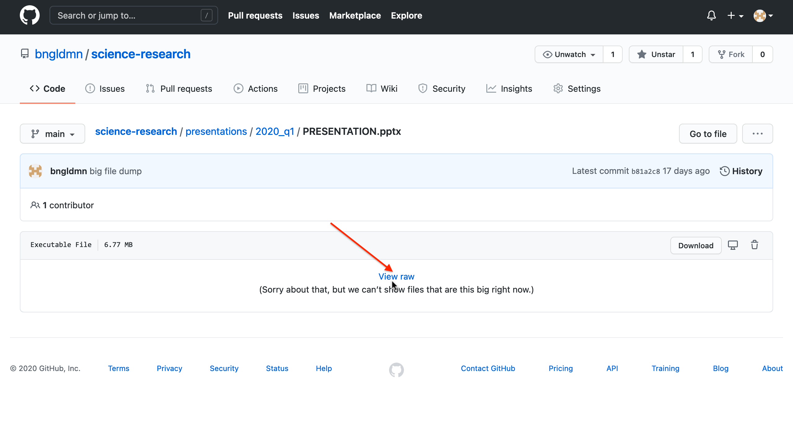

Science Research Portfolio
Table of Contents
1 Benjamin Goldman
Junior
1.1 HOW TO USE:
- There are certain files with the extensions
.organd.md. These files are used to create the.pdffiles that have the same file name. They will have the same content but slightly different formatting compared to their.pdffiles. They will also open more easily online and are much smaller in size. If you see a.orgfile with the same name as another file, it is usually easier to view the.orgbecause it will not have to be downloaded. - Files with the
.bbland.outfiles are used as support files, and they may be unreadable. .pdf,.md, and.orgfiles can all be read online, in the browser window.- Other files, like Microsoft Office documents (
.docx,.pptx,.xlsx) will have to be downloaded following the instructions below. - Finally, files with the extensions
.odtand.odpcan be opened in Word and PowerPoint, respectively.
1.1.1 Generally, most of my documents are in .pdf form.
1.1.2 Files named readme.md or readme.org are summary/explanation for certain folders, or they contain an online-viewable copy of that folder’s content.
Navigate repository on website and download files individually as needed.
- Navigate by clicking on folder links at top
- Certain files cannot be viewed online, click “View Raw” to download and open offline.

1.2 Files List
. ├── articles │ ├── An2017Feedback.pdf │ ├── Bjerknes1969Atmospheric.pdf │ ├── Boer2000Transient.pdf │ ├── book │ │ ├── c01.pdf │ │ ├── c02_finalProof.pdf │ │ ├── ftoc.pdf │ │ ├── summaries.md │ │ └── summaries.pdf │ ├── Cai2018Increased.pdf │ ├── Chen2015Causes.pdf │ ├── Chen2017Possible.pdf │ ├── Deser2020Isolating.pdf │ ├── Dewitte2012Reinterpreting.pdf │ ├── Emile2007Nino.pdf │ ├── Graham2014Effectivetess.pdf │ ├── Hu2018Cross.pdf │ ├── Jia2019Weakening.pdf │ ├── Jimenez2016Record.pdf │ ├── Kay2015Community.pdf │ ├── Kestin1997Time.pdf │ ├── Kiladis2009Convectively.pdf │ ├── Kim2014Response.pdf │ ├── Koyhama2018Weakening.pdf │ ├── Levine2017Impact.pdf │ ├── Liu2007Atmospheric.pdf │ ├── Lorentz1963Deterministic.pdf │ ├── Lubbecke2013Assessing.pdf │ ├── Maher2018Enso.pdf │ ├── notes │ │ └── Cai2018Increased.md │ ├── Nowak2017Role.pdf │ ├── Philips2014Evaluating.pdf │ ├── Rashid2015Atmospheric.pdf │ ├── README.md │ ├── referencelist │ │ ├── referencelist.aux │ │ ├── referencelist.bbl │ │ ├── referencelist.blg │ │ ├── referencelist.dvi │ │ ├── referencelist.log │ │ ├── referencelist.pdf │ │ └── referencelist.tex │ ├── referencelist.pdf │ ├── references.bib │ ├── Ropeleweski1987Global.pdf │ ├── Son2010Impact.pdf │ ├── Stevenson2008ENSO.pdf │ ├── Stevenson2011Significant.pdf │ ├── Stevenson2012Significant.pdf │ ├── Stevenson2017Forced.pdf │ ├── Torrence1998Practical.pdf │ ├── Vecchi2006Weakening.pdf │ ├── Vega2017Analysis.pdf │ ├── Wang2016Review.pdf │ ├── Yeo2016Role.pdf │ ├── Zhang2019Review.pdf │ ├── Zheng2016Intermodel.pdf │ └── Zheng2017response.pdf ├── assessments │ ├── 2020-2021_JUNIORS_summer_assessment-1.pdf │ ├── Junior │ │ ├── 2 │ │ │ ├── Ben Goldman BiWeekly #2 List.pdf │ │ │ ├── PRESENTATION.pptx │ │ │ └── Screen Shot 2020-10-06 at 7.20.27 PM.png │ │ ├── 3 │ │ │ ├── Benjamin Goldman #3 List.pdf │ │ │ └── Screen Shot 2020-10-11 at 7.07.38 PM.png │ │ ├── 4 │ │ │ ├── 3_Inter-Library Loan.pdf │ │ │ ├── 4_dataset.png │ │ │ ├── 5_pptfeedbackpractice.pdf │ │ │ ├── 6_youtubeupload.png │ │ │ ├── 7_feedback4others.pdf │ │ │ ├── 8_side board template each 20 x 48.pptx │ │ │ ├── 9_PRESENTATION.pptx │ │ │ ├── 9_script.pdf │ │ │ ├── 10_paper.pdf │ │ │ └── Benjamin Goldman BiWeekly #4 List.pdf │ │ ├── 5 │ │ │ ├── 4_observationlog.pdf │ │ │ ├── 5_paper.pdf │ │ │ ├── 6_PRESENTATION.pptx │ │ │ ├── 7_practice_feedback.pdf │ │ │ ├── 8_summaries.pdf │ │ │ ├── 9_data_command.png │ │ │ ├── 9_data_files.png │ │ │ ├── 10_helping.txt │ │ │ └── Benjamin Goldman #5 List.pdf │ │ ├── 6 │ │ │ ├── 3_5_wesef_submission.png │ │ │ ├── 4_paper.pdf │ │ │ ├── 6_PRESENTATION2.pdf │ │ │ ├── 7_feedback.pdf │ │ │ ├── 9_sean_feedback.png │ │ │ └── Benjamin Goldman BiWeekly 6 List.pdf │ │ ├── 7 │ │ │ ├── 3_Cai2018Increased.pdf │ │ │ ├── 4_elevatorfeedback.pdf │ │ │ ├── 5_powerpoint │ │ │ │ ├── PRESENTATION.odp │ │ │ │ └── script.pdf │ │ │ ├── 6_feedback.pdf │ │ │ ├── 7_GitHub - bngldmn_science-research Portfolio.html │ │ │ ├── 8_feedbackforothers.pdf │ │ │ ├── 9_data_switch_to_R.txt │ │ │ ├── Benjamin Goldman BiWeekly #7.pdf │ │ │ ├── Cai2018Increased.pdf │ │ │ └── Hours.xlsx │ │ ├── 8 │ │ │ ├── 3_Wang2019Changes.pdf │ │ │ ├── 3_wang2019changes_notes.pdf │ │ │ ├── 4+7_MentorEmail.png │ │ │ ├── 4_diff_tempdt.pdf │ │ │ ├── 4_tempdttimeseries.png │ │ │ ├── 5_presentation.pdf │ │ │ ├── 6_feedback.pdf │ │ │ ├── 7_futureideas.md │ │ │ ├── 7_futureideas.pdf │ │ │ ├── 8_feedback_for_others.pdf │ │ │ ├── 10_marcus_paper.docx │ │ │ └── Benjamin Goldman BiWeekly #8.pdf │ │ ├── 9 │ │ │ ├── 2_Hours.xlsx │ │ │ ├── 3_mentor_communication.png │ │ │ ├── 4_WESEF_presentation.pdf │ │ │ ├── 5_practice_feedback.pdf │ │ │ ├── 7_10_feedback_for_others.pdf │ │ │ └── Benjamin Goldman BiWeekly #9.pdf │ │ ├── 10 │ │ │ ├── 2_Hours.xlsx │ │ │ ├── 4_presentation.pdf │ │ │ ├── 5_feedback.pdf │ │ │ ├── 6_Lorentz1963Deterministic.pdf │ │ │ ├── 6_lorentz1963deterministic_notes.pdf │ │ │ ├── 8_senioryear.pdf │ │ │ ├── 9_.pdf │ │ │ ├── 10_paper.pdf │ │ │ └── Benjamin Goldman BiWeekly #10.pdf │ │ ├── 11 │ │ │ ├── 2_Hours.xlsx │ │ │ ├── 3_6_isabelle_paper.docx │ │ │ ├── 4_plan.pdf │ │ │ ├── 5_1-Checklist-for-Adult-Sponsor.pdf │ │ │ ├── 5_1A-Student-Checklist-Research-Plan-Instructions.pdf │ │ │ ├── 5_1B-Approval-Form.pdf │ │ │ ├── 5_7-Continuation.pdf │ │ │ ├── 7_Hu2018Cross.pdf │ │ │ ├── 7_Hu2018Cross_notes.pdf │ │ │ ├── 8_feedback.pdf │ │ │ ├── 10_data_code.r │ │ │ ├── 10_data_new_language.png │ │ │ └── Benjamin Goldman BiWeekly #11.pdf │ │ └── 12 │ │ ├── 3_abstract.docx │ │ ├── 4_plan.pdf │ │ ├── 5_WESEF_Forms_2022.zip │ │ ├── 6_Celia Holden Research Paper.pdf │ │ ├── 8_transcript.pdf │ │ ├── Benajmin Goldman BiWeekly #12.pdf │ │ └── Hours.xlsx │ ├── README.md │ └── Sophomore │ ├── Benjamin Goldman BiWeekly 6 List.pdf │ ├── spring2020_1.pdf │ ├── spring2020_2.pdf │ └── spring2020_3.pdf ├── classwork │ ├── 20201130_224743000_iOS.MOV │ ├── Average_Monthly_Temperatures_Practice_Data.xlsx │ ├── Bias+article+with+questions+(sub+lesson).pdf │ ├── Bias+in+Research+2+26+21.pdf │ ├── Correlation │ │ ├── CorrelationStudentPractice.xlsx │ │ └── GraphinginExcelPart2Correlations.pdf │ ├── COVID-19_vaccine_candidate_shows_promise_research_shows.pdf │ ├── Data+for+Descriptive+Statistics.xlsx │ ├── Data_for_calculating_p-values.xlsx │ ├── Error Bars │ │ └── ErrorBarsBenGoldman.xlsx │ ├── giarticle.txt │ ├── Graphing_in_Excel_Part_1.pdf │ ├── Learning+about+Online+Databases+Part+1+-+General+Sites.docx │ ├── Notes+on+inferential+statistics+Day+1.docx │ ├── Notes+on+inferential+statistics+Day+2.docx │ ├── plagiarism_internet_article_activity_10_20_20.docx │ ├── README.md │ ├── Recording_PowerPoint_practice.pptx │ ├── RHSQ+practice+class+assignment+11+12+20.docx │ ├── RHSQ+practice+class+assignment+11+16+20.docx │ ├── Science_Research_Google_Scavenger_Hunt.pdf │ ├── screencast 2020-10-21 12-37-05.mp4 │ ├── Vertebrate+Animal+Testing+and+Backstage+Lab+Tour.pdf │ ├── WaterBotleData.docx │ └── WaterBottleData.xlsx ├── competitions │ ├── README.md │ ├── sts │ │ ├── essay_questions.html │ │ └── essay_questions.org │ ├── WESEF_2021 │ │ ├── 1-Checklist-for-Adult-Sponsor.pdf │ │ ├── 1-Checklist-for-Adult-Sponsor Ben Goldman.pdf │ │ ├── 1_filled.pdf │ │ ├── 1a_filled.pdf │ │ ├── 1B-Approval-Form.pdf │ │ ├── 1b_filled.pdf │ │ ├── Research Plan.pdf │ │ └── WESEF_abstract-2020.pdf │ └── WESEF_2022 │ ├── 1-Checklist-for-Adult-Sponsor.pdf │ ├── 1A-Student-Checklist-Research-Plan-Instructions.pdf │ ├── 1B-Approval-Form.pdf │ └── 7-Continuation.pdf ├── data │ ├── code │ │ ├── aer_var.csv │ │ ├── analyzeVariance.r │ │ ├── bmb_var.csv │ │ ├── extractVariance.r │ │ ├── ff_var.csv │ │ ├── ghg_var.csv │ │ ├── luc_var.csv │ │ └── mydate.csv │ ├── Code_old │ │ ├── 20year_variance.py │ │ ├── [jupyter] │ │ ├── __init__.py │ │ ├── __pycache__ │ │ │ ├── helpers.cpython-37.pyc │ │ │ ├── helpers.cpython-38.pyc │ │ │ ├── variance.cpython-37.pyc │ │ │ └── variance.cpython-38.pyc │ │ ├── control_variance.py │ │ ├── correlation_xsections.py │ │ ├── extract.sh │ │ ├── fix_data.py │ │ ├── helpers.py │ │ ├── matplotlibrc │ │ ├── nino_contour.py │ │ ├── open_nino.py │ │ ├── open_tempcep.py │ │ ├── open_tempdt.py │ │ ├── open_tempeep.py │ │ ├── open_tempwep.py │ │ ├── open_xsections.py │ │ ├── openCVDP.py │ │ ├── pptfigs.py │ │ ├── R │ │ │ └── yay.pdf │ │ ├── regexes.txt │ │ ├── tempcep.py │ │ ├── tempdt.py │ │ ├── tempeep.py │ │ ├── tempwep.py │ │ ├── variance.py │ │ └── variance.r │ ├── data │ ├── Data_old │ │ ├── aer_set.csv │ │ ├── aer_tempcep_ps.npy │ │ ├── aer_tempcep_rs.npy │ │ ├── aer_tempdt_ps.npy │ │ ├── aer_tempdt_rs.npy │ │ ├── aer_tempeep_ps.npy │ │ ├── aer_tempeep_rs.npy │ │ ├── aer_tempwep_ps.npy │ │ ├── aer_tempwep_rs.npy │ │ ├── bmb_set.csv │ │ ├── ctl.csv │ │ ├── ctl_amo.csv │ │ ├── ctl_amoc.csv │ │ ├── depth.csv │ │ ├── diff_aer_tempcep_ps.npy │ │ ├── diff_aer_tempcep_rs.npy │ │ ├── diff_aer_tempdt_ps.npy │ │ ├── diff_aer_tempdt_rs.npy │ │ ├── diff_aer_tempeep_ps.npy │ │ ├── diff_aer_tempeep_rs.npy │ │ ├── diff_aer_tempwep_ps.npy │ │ ├── diff_aer_tempwep_rs.npy │ │ ├── diff_ghg_tempcep_ps.npy │ │ ├── diff_ghg_tempcep_rs.npy │ │ ├── diff_ghg_tempdt_ps.npy │ │ ├── diff_ghg_tempdt_rs.npy │ │ ├── diff_ghg_tempeep_ps.npy │ │ ├── diff_ghg_tempeep_rs.npy │ │ ├── diff_ghg_tempwep_ps.npy │ │ ├── diff_ghg_tempwep_rs.npy │ │ ├── ff_1850.csv │ │ ├── ff_set.csv │ │ ├── ff_tempcep_ps.npy │ │ ├── ff_tempcep_rs.npy │ │ ├── ff_tempdt_ps.npy │ │ ├── ff_tempdt_rs.npy │ │ ├── ff_tempeep_ps.npy │ │ ├── ff_tempeep_rs.npy │ │ ├── ff_tempwep_ps.npy │ │ ├── ff_tempwep_rs.npy │ │ ├── ghg_set.csv │ │ ├── ghg_tempcep_ps.npy │ │ ├── ghg_tempcep_rs.npy │ │ ├── ghg_tempdt_ps.npy │ │ ├── ghg_tempdt_rs.npy │ │ ├── ghg_tempeep_ps.npy │ │ ├── ghg_tempeep_rs.npy │ │ ├── ghg_tempwep_ps.npy │ │ ├── ghg_tempwep_rs.npy │ │ ├── lat.csv │ │ ├── lat1.csv │ │ ├── lon.csv │ │ ├── lon1.csv │ │ ├── luc_set.csv │ │ ├── oic_1850.csv │ │ ├── oic_set.csv │ │ ├── ozo_set.csv │ │ └── tempdttimeseries.png │ ├── figures │ │ ├── 1.pdf │ │ ├── 1.png │ │ ├── 3.pdf │ │ ├── 5.pdf │ │ ├── 6.pdf │ │ ├── 7.pdf │ │ ├── 8.pdf │ │ ├── 9.pdf │ │ ├── 10.pdf │ │ ├── 11.pdf │ │ ├── 12.pdf │ │ ├── 13.pdf │ │ ├── 14.pdf │ │ ├── 15.pdf │ │ ├── 16.pdf │ │ ├── 17.pdf │ │ ├── 18.pdf │ │ ├── 24.pdf │ │ ├── 25.pdf │ │ ├── 26.pdf │ │ ├── bootstrap_1.pdf │ │ ├── bootstrap_1.ps │ │ ├── bootstrap_2.pdf │ │ ├── diff_aer_tempwep_rs.npy │ │ ├── diff_tempcep.pdf │ │ ├── diff_tempdt.pdf │ │ ├── diff_tempeep.pdf │ │ ├── diff_tempwep.pdf │ │ ├── nino.pdf │ │ ├── tempcep.pdf │ │ ├── tempdt.pdf │ │ ├── tempdttimeseries.png │ │ ├── tempeep.pdf │ │ ├── tempwep.pdf │ │ ├── variance_1.pdf │ │ ├── variance_1.ps │ │ ├── variance_2.pdf │ │ └── variance_3.pdf │ └── README.md ├── feedback │ ├── elevator │ │ ├── elevatorfeedback.md │ │ └── elevatorfeedback.pdf │ ├── JuniorQ1 │ │ ├── feedback4others.pdf │ │ ├── observationlog.pdf │ │ └── pptfeedback.pdf │ ├── JuniorQ2 │ │ ├── feedback.md │ │ ├── feedback.pdf │ │ ├── feedbackforothers.md │ │ └── feedbackforothers.pdf │ ├── JuniorQ3 │ │ ├── feedback.md │ │ ├── feedback.pdf │ │ └── feedbackforothers.md │ ├── JuniorQ4 │ │ ├── feedback.bbl │ │ ├── feedback.org │ │ ├── feedback.out │ │ ├── feedback.pdf │ │ ├── feedback.tex │ │ └── feedback4others.org │ └── readme.org ├── hours │ └── Junior │ ├── Hours.csv │ ├── Hours.xlsx │ └── README.org ├── mentor │ ├── emaildraft.txt │ ├── mentor_info.org │ ├── mentor_info.pdf │ ├── Re_Collaboration on ENSO variance modulation-18280.txt │ ├── readme.org │ ├── transcript_1.pdf │ ├── transcript_2.pdf │ ├── transcript_3.pdf │ ├── transcript_4.pdf │ └── transcript_5.pdf ├── miscellaneous │ ├── Old Things │ │ ├── Assessment1 │ │ │ ├── GIArticleSummaries.docx │ │ │ ├── MentorEmailDrafts.docx │ │ │ ├── Professional Science Researcher activity for sophomores.docx │ │ │ ├── Professional Science Researcher activity for sophomores.pdf │ │ │ └── scholarBioPages │ │ │ ├── Allison Gray.PNG │ │ │ ├── Pengfei Yu.PNG │ │ │ ├── Screen Shot 2019-09-25 at 7.59.04 PM.png │ │ │ ├── Screen Shot 2019-09-29 at 9.48.46 AM.png │ │ │ ├── Sonali P McDermid.PNG │ │ │ ├── Timothy Hall.PNG │ │ │ └── Tong Lee.PNG │ │ ├── DataSources.xlsx │ │ ├── DataSources copy.xlsx │ │ ├── Datasourcescreenshots │ │ │ ├── climatedataguide-ucar.PNG │ │ │ ├── esgf-llnl.PNG │ │ │ ├── rda.ucar.PNG │ │ │ └── Screen Shot 2020-02-12 at 8.18.12 PM.png │ │ ├── EmailDrafts_Mentor_search │ │ │ ├── EmailDrafts4LDEOProfs.docx │ │ │ ├── EmailDrafts11-8-19.docx │ │ │ ├── EmailDrafts11-27-19.docx │ │ │ ├── Emails 2-10-20.docx │ │ │ └── RespomseTimothyHall.docx │ │ ├── Getting Motivated Videos.docx │ │ ├── Hours_spring2020.xlsx │ │ ├── Jupyter PDFs │ │ │ ├── large_ensemble_var.pdf │ │ │ └── obs_ENSO_variance.pdf │ │ ├── LamontDoertyInternship │ │ │ ├── 2019 Center for Climate and Life at Lamont.docx │ │ │ ├── Application.docx │ │ │ ├── Application2.docx │ │ │ └── Climate-and-Life-Intern-Program-Application-Form.pdf │ │ ├── LearnPythonData │ │ │ ├── ElNinoHello_PCA_Nino3.4.pdf │ │ │ ├── eof0.png │ │ │ ├── eof1.png │ │ │ ├── eof2.png │ │ │ ├── eof3.png │ │ │ ├── pcs.png │ │ │ └── TryTry - Jupyter Notebook.pdf │ │ ├── MentorList.xlsx │ │ ├── Methodology.docx │ │ ├── Old Useless Things.zip │ │ ├── referencelist.docx │ │ ├── Summary.docx │ │ ├── WaterBotleData.docx │ │ ├── WaterBottleData.xlsx │ │ └── WaterBottleData copy.xlsx │ ├── PRESENTATION_very_old.pptx │ ├── Scanned documents │ │ ├── article4-13-20.pdf │ │ ├── Article5-6-20_P1.pdf │ │ ├── Article5-6-20_P2.pdf │ │ └── hours_3-23-20.pdf │ ├── senioryear.md │ ├── senioryear.pdf │ ├── Summer2019 │ │ ├── MentorsList.txt │ │ ├── Screen Shot 2019-08-06 at 4.06.01 PM.png │ │ ├── Screen Shot 2019-08-06 at 4.06.40 PM.png │ │ ├── Screen Shot 2019-08-06 at 4.07.36 PM.png │ │ ├── Screen Shot 2019-08-06 at 4.14.32 PM.png │ │ ├── Screen Shot 2019-08-06 at 4.15.52 PM.png │ │ ├── summerAssignmentSources.docx │ │ └── SummerAssignmentSummaries.docx │ ├── Summer2020 │ │ ├── 2020-2021_JUNIORS_summer_assessment-1.pdf │ │ ├── Introduction_to_Research_Paper_Assignment-1.pdf │ │ ├── Introduction_to_Research_Paper_rubric-1.pdf │ │ ├── MentorInformation.md │ │ └── UHSFiles │ │ ├── Assignments │ │ │ ├── Mentor Information.pdf │ │ │ ├── paper.pdf │ │ │ ├── referencelist.pdf │ │ │ └── Research Plan.pdf │ │ ├── Code │ │ │ ├── 20year_variance.py │ │ │ ├── control_variance.py │ │ │ ├── correlation_xsections.py │ │ │ ├── correlations.py │ │ │ ├── fix_data.py │ │ │ ├── helpers.py │ │ │ ├── open_xsections.py │ │ │ ├── regexes.txt │ │ │ ├── tempcep.py │ │ │ ├── tempdt.py │ │ │ ├── tempeep.py │ │ │ ├── tempwep.py │ │ │ └── variance.py │ │ ├── EnrollmentForm.pdf │ │ ├── Figures │ │ │ ├── 1.pdf │ │ │ ├── 2.pdf │ │ │ ├── 3.pdf │ │ │ ├── 4.pdf │ │ │ ├── 5.pdf │ │ │ ├── 6.pdf │ │ │ ├── 7.pdf │ │ │ ├── 8.pdf │ │ │ ├── 9.pdf │ │ │ ├── 10.pdf │ │ │ ├── 11.pdf │ │ │ ├── 12.pdf │ │ │ ├── 13.pdf │ │ │ ├── 14.pdf │ │ │ ├── 15.pdf │ │ │ ├── 16.pdf │ │ │ ├── 17.pdf │ │ │ ├── 18.pdf │ │ │ ├── 19.pdf │ │ │ ├── 20.pdf │ │ │ ├── 21.pdf │ │ │ ├── 22.pdf │ │ │ ├── 23.pdf │ │ │ ├── 24.pdf │ │ │ ├── 25.pdf │ │ │ └── 26.pdf │ │ ├── FINAL_DRAFT_2210_Student_Parent_Guide.pdf │ │ ├── HoursSummer2020.xlsx │ │ ├── HoursSummer2020 copy.xlsx │ │ ├── Latex_submission_guidelines_Sept52019.pdf │ │ ├── Maher_et_al-2018-Geophysical_Research_Letters.pdf │ │ ├── Mentor email transcript 1.pdf │ │ ├── Mentor email transcript 2.pdf │ │ ├── MsFlemingEmailTranscript.pdf │ │ ├── Order Receipt.html │ │ ├── references.bib │ │ ├── refsSummer2020.pdf │ │ ├── Registration_Instructions_for_Summer_Science_Research_2020_-_2021_-_Fleming_Kimberly_-_ACAS.pdf │ │ ├── Screenshots │ │ │ ├── Code editor console screenshot.png │ │ │ ├── Dataset screenshot.png │ │ │ ├── github project screenshot.png │ │ │ └── learning r tutorial.png │ │ └── UHSEnrollmentForm.pdf │ └── TextbookHW │ ├── Ch4_5.docx │ ├── Ch6_7.docx │ ├── ch8.docx │ ├── CH9.docx │ ├── Ch10.docx │ ├── Ch11.docx │ └── ch12.docx ├── paperwork │ ├── abstract │ │ ├── abstract.bbl │ │ ├── abstract.doc │ │ ├── abstract.docx │ │ ├── abstract.odt │ │ ├── abstract.org │ │ ├── abstract.pdf │ │ ├── abstract.tex │ │ ├── readme.org │ │ └── Sample Abstract Format.pdf │ ├── Abstract_old │ │ └── Abstract2.docx │ ├── classmates papers │ │ ├── celia_feedback.bbl │ │ ├── celia_feedback.org │ │ ├── celia_feedback.pdf │ │ ├── celia_feedback.tex │ │ ├── Celia Holden Research Paper.pdf │ │ ├── isabelle_paper.docx │ │ ├── Jimena_Paper.docx │ │ ├── marcus_paper.docx │ │ └── Sean paper.docx │ ├── elevator │ │ ├── elevator.md │ │ ├── elevator.pdf │ │ └── readme.md │ ├── Latex_submission_guidelines_Sept52019.pdf │ ├── paper │ │ ├── _region_.tex │ │ ├── agu_archive │ │ │ ├── agujournal2019.cls │ │ │ ├── agutexSI2019.cls │ │ │ ├── paper.aux │ │ │ ├── paper.bbl │ │ │ ├── paper.blg │ │ │ ├── paper.log │ │ │ ├── paper.pdf │ │ │ ├── paper.synctex.gz │ │ │ ├── paper.tex │ │ │ ├── si_template_2019.aux │ │ │ ├── si_template_2019.log │ │ │ ├── si_template_2019.pdf │ │ │ ├── si_template_2019.tex │ │ │ ├── trackchanges-0.7.0 │ │ │ │ ├── AUTHORS │ │ │ │ ├── COPYING │ │ │ │ ├── LatexPackage │ │ │ │ │ ├── license.txt │ │ │ │ │ └── trackchanges.sty │ │ │ │ ├── PKG-INFO │ │ │ │ ├── PythonPackage │ │ │ │ │ ├── AcceptChanges │ │ │ │ │ │ ├── __init__.py │ │ │ │ │ │ ├── consoleoutput.py │ │ │ │ │ │ └── linesegment.py │ │ │ │ │ ├── acceptchanges.py │ │ │ │ │ ├── TrackChanges │ │ │ │ │ │ └── __init__.py │ │ │ │ │ └── trackchanges.py │ │ │ │ ├── README │ │ │ │ └── testing │ │ │ │ ├── testing_edit.tex │ │ │ │ ├── testing_new.tex │ │ │ │ └── testing_old.tex │ │ │ └── trackchanges.sty │ │ ├── figures │ │ │ ├── bootstrap_1.pdf │ │ │ ├── bootstrap_1.png │ │ │ ├── tempcep.pdf │ │ │ ├── tempdt.pdf │ │ │ ├── tempeep.pdf │ │ │ ├── tempwep.pdf │ │ │ └── variance_1.pdf │ │ ├── figures copy │ │ │ ├── bootstrap_1.pdf │ │ │ ├── tempcep.pdf │ │ │ ├── tempdt.pdf │ │ │ ├── tempeep.pdf │ │ │ ├── tempwep.pdf │ │ │ └── variance_1.pdf │ │ ├── paper.bbl │ │ ├── paper.html │ │ ├── paper.org │ │ ├── paper.pdf │ │ ├── paper.tex │ │ ├── paperoutline.md │ │ ├── paperoutline.pdf │ │ └── references.bib │ ├── paper_archive │ │ ├── paper.aux │ │ ├── paper.bbl │ │ ├── paper.bcf │ │ ├── paper.blg │ │ ├── paper.fdb_latexmk │ │ ├── paper.fls │ │ ├── paper.log │ │ ├── paper.out │ │ ├── paper.pdf │ │ ├── paper.run-Ben’sMacBookPro.xml │ │ ├── paper.run.xml │ │ ├── paper.synctex.gz │ │ └── paper.tex │ ├── papernew │ │ ├── papernew.bbl │ │ ├── papernew.dvi │ │ ├── papernew.pdf │ │ ├── papernew.tex │ │ └── test.tex │ ├── Publish_With_AGU.pdf │ ├── readme.org │ ├── Research Plan │ │ ├── refs.bib │ │ ├── Research Plan.aux │ │ ├── Research Plan.bbl │ │ ├── Research Plan.blg │ │ ├── Research Plan.log │ │ ├── Research Plan.pdf │ │ └── Research Plan.tex │ ├── ResearchPlan2 │ │ ├── 1A-Student-Checklist-Research-Plan-Instructions.pdf │ │ ├── auto │ │ │ └── researchplan.el │ │ ├── org-ref.org │ │ ├── plan.org │ │ ├── plan.pdf │ │ ├── plan.tex │ │ └── references.bib │ └── RHSQ's │ ├── RHSQ1 │ │ ├── aax4111_SM.pdf │ │ ├── Presesntation outlineScript.docx │ │ ├── RHSQGlossary.docx │ │ └── RHSQSummary.docx │ ├── RHSQ2 │ │ └── RHSQ2.docx │ ├── RHSQ3 │ │ └── Rhsq.docx │ └── RHSQ4 │ └── Rhsq4.docx ├── presentations │ ├── 2020_q1 │ │ ├── PRESENTATION.pptx │ │ └── script.pdf │ ├── 2020_q2 │ │ ├── PRESENTATION.odp │ │ ├── script.md │ │ └── script.pdf │ ├── elevator │ │ ├── Ben Goldman.pdf │ │ ├── elevator.pdf │ │ └── IMG_0905.mov │ ├── Figs │ │ ├── bootstrap_1.pdf │ │ ├── bootstrap_1.tiff │ │ ├── graph.pdf │ │ ├── tempcep.pdf │ │ ├── tempcep.tiff │ │ ├── tempdt.pdf │ │ ├── tempdt.tiff │ │ ├── variance_1.pdf │ │ ├── variance_1.tiff │ │ └── variance_2.pdf │ ├── outline.md │ ├── presentation_current │ │ ├── board_test-Ben’sMacBookPro-2.pdf │ │ ├── board_test-Ben’sMacBookPro.pdf │ │ ├── images │ │ │ ├── bootstrap_2.pdf │ │ │ ├── climate_change.pdf │ │ │ ├── diff_tempdt.pdf │ │ │ ├── el_nino.jpg │ │ │ ├── el_nino_reduced.jpg │ │ │ ├── nino3_4.pdf │ │ │ ├── variance_2.pdf │ │ │ └── variance_3.pdf │ │ ├── presentation-Ben’sMacBookPro-2.pdf │ │ ├── presentation-Ben’sMacBookPro-3.pdf │ │ ├── presentation-Ben’sMacBookPro-4.pdf │ │ ├── presentation-Ben’sMacBookPro-5.pdf │ │ ├── presentation-Ben’sMacBookPro.dvi │ │ ├── presentation-Ben’sMacBookPro.pdf │ │ ├── presentation.bbl │ │ ├── presentation.dvi │ │ ├── presentation.org │ │ ├── presentation.pdf │ │ ├── presentation.tex │ │ └── references.bib │ ├── Q3 │ │ ├── JUNIORS+Q3+Presentations.pdf │ │ ├── PRESENTATION_old.odp │ │ └── script_old.pdf │ ├── Q4 │ │ ├── JUNIORS_Q4_Presentations.pdf │ │ └── Rubric_for_Q4_JUNIORS.pdf │ ├── readme.org │ ├── script.bbl │ ├── script.org │ ├── script.pdf │ ├── script.tex │ ├── Symposium │ │ ├── presentation.org │ │ └── presentation.pdf │ ├── WESEF_2021 │ │ ├── 2021-WESEF-MAIN-rubric.pdf │ │ ├── application │ │ │ ├── 1-Checklist-for-Adult-Sponsor.pdf │ │ │ ├── 1-Checklist-for-Adult-Sponsor Ben Goldman.pdf │ │ │ ├── 1_filled.pdf │ │ │ ├── 1a_filled.pdf │ │ │ ├── 1B-Approval-Form.pdf │ │ │ ├── 1b_filled.pdf │ │ │ ├── Research Plan.pdf │ │ │ └── WESEF_abstract-2020.pdf │ │ ├── feedback.md │ │ ├── feedback.pdf │ │ ├── feedback_for_others.md │ │ ├── feedback_for_others.pdf │ │ ├── Goldman, Benjamin - WESEF 2021.pdf │ │ ├── Last Minute Tips for WESEF 2021.pdf │ │ ├── PRESENTATION.odp │ │ ├── PRESENTATION_old.pptx │ │ ├── script.md │ │ ├── script.pdf │ │ └── WESEF+Instructions+for+virtual+fair.pdf │ └── Westlake │ ├── 2021+Announcement+Flyer.pdf │ ├── 2021+Judge+Solicitation+Letter+WESTLAKE.pdf │ ├── 2021+MASTER+SWSF+RUBRIC+(PDF).pdf │ └── WESTLAKE+2021+Judging+procedures.pdf ├── README.md ├── README.org ├── readme_imgs │ ├── download.png │ └── viewraw.png ├── Science+Research+Virtual+Portfolio+Contents+2020-21.pdf ├── Science+Research+Virtual+Portfolio+Grading+Rubric.pdf ├── SUMMER.org └── SUNY ├── 2021 │ ├── INSTRUCTIONS FOR THE UHS REDUCED PROGRAM FEE.pdf │ ├── Registration Instructions for Summer Science Research 2021 - 2022 - Fleming, Kimberly - ACAS 209.pdf │ └── UHS Benefits of Participation.pdf ├── Order Receipt.pdf └── UALTRUCR.pdf